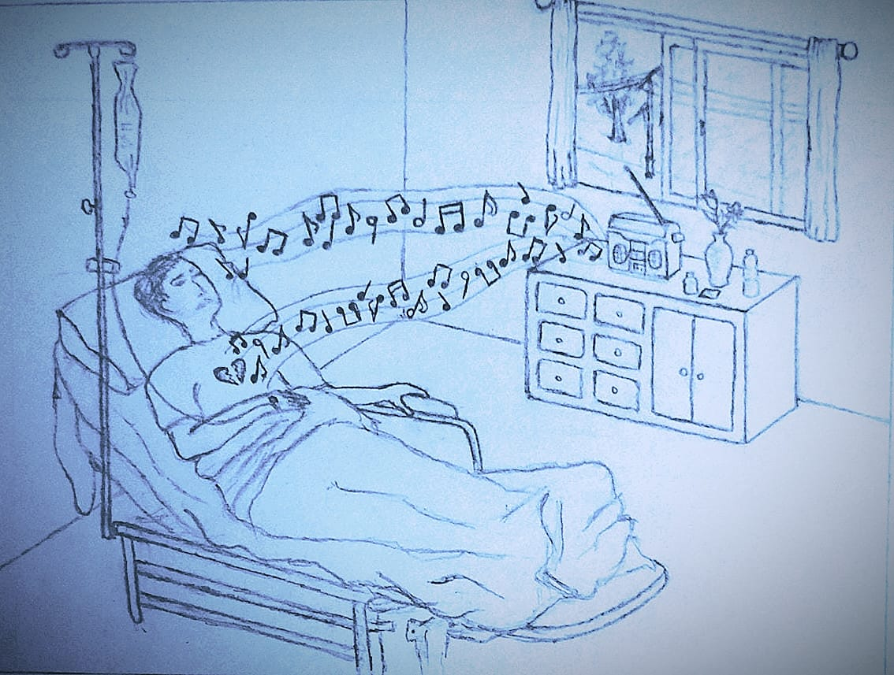
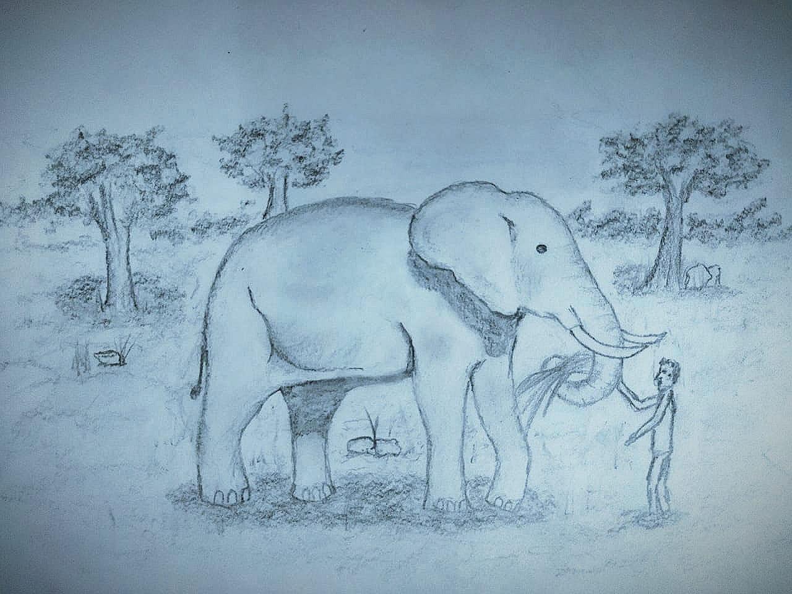

2) Communication beyond
SPECIES
This level of communication is that which goes even beyond language. .
It is between two different species completely different in their physical and mental form
Even something as primordial as ART fails to reach this inaccessible location.
This is accomplished by something very simple , as well as special.
Here the aspect of CARING comes to picture.
CARING:-
To devout oneself to another's wellbeing in any form possible.
MODES :-
- Music if you thought was just an art form , you're mistaken
The essence of music can be felt by anything with life. .
Music has shown to improve plant growth and even influence
animal behavior in many unexpected positive ways
It has unexplainable significance towards the aspect of caring
because its not just known , but confirmed by its ability to heal .
If you assumed it heals only the mental strata of a living object , you're once again mistaken
as it has accelerated even physical healing :)
Thy affirming the "Caring aspect" in the process of well-wishing that which is living
(may it be plants seeing a jumped growth , or a fruit ripening quick , or a buffalo producing more milk , or a person healing from miseries )

-
FOOD and FEEDING
This shares Equal or more Credit towards the aspect of care compared to music .
They say a dog is a man's best friend, but i'd like to say a dog is its feeder's best friend .
A dog is loyal to who feeds it,not just a dog but sometimes even a hungry lion has reverence
to the zookeeper who feeds it .
-
The action of providing a Meal is the highest level of service or care one can do to another.
Though you may think providing food is a one way transaction . .
It isn't :)

-
Those you made happy by providing food shall ever remain your well-wisher almost without them even realising it.
I guess you know what happens after that
As the author of "Alchemist" says :
"When you want something, all the universe conspires in helping you to achieve it "
So somebody blessing you for your service,is a part of the universe already on your side :)
Such things are incomprehensible to those who trust just the words from a mouth .